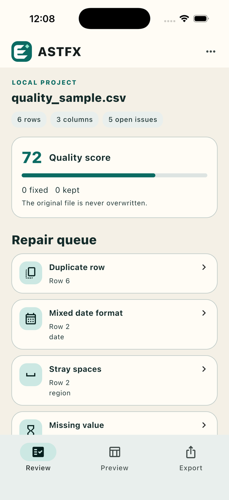
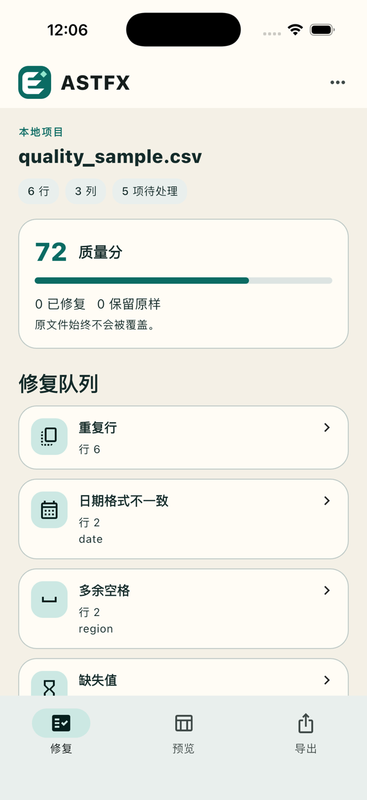

Confirm the input
Choose CSV, TSV, TXT, or XLSX through the system file picker. Confirm UTF-8 or GBK text encoding, or select an Excel worksheet before inspection.
ON-DEVICE TABLE QUALITY
Find missing values, duplicate rows, stray spaces, mixed numeric types, and inconsistent dates. You decide each repair, preview the working copy, and share the result with a concise report. Your selected source file stays untouched.
Contact support

Built for real work
Choose CSV, TSV, TXT, or XLSX through the system file picker. Confirm UTF-8 or GBK text encoding, or select an Excel worksheet before inspection.
Review the row, column, current value, and suggestion. Apply a change, enter a replacement, or keep the value. Each decision runs the checks again; decisions in the current session can be undone.
Share a CSV and a Markdown report. If open issues remain, the CSV is marked as a draft and the report records the unresolved count. The report omits complete source rows.
为真实使用而设计
通过系统文件选择器打开 CSV、TSV、TXT 或 XLSX。开始检查前，确认 UTF-8／GBK 编码或选择 Excel 工作表。
查看行、列、当前值与建议。采用建议、输入替换值，或保留原样。每次决定都会重新检查；当前会话中的决定可以撤销。
一起分享 CSV 和 Markdown 质量报告。仍有问题时，CSV 会标记为草稿，报告记录未处理数量，且不嵌入完整原始行。
Original file preserved
One project and a local recovery backup are stored privately by the app. No account is required. Exports go to the destination you choose in the system share sheet. System backups and file providers follow their own policies.
Input limits: 5 MB, 10,000 data rows, 100 columns, 100,000 cells, and 500 issues per file. English and Simplified Chinese UI and reports. System light and dark appearance.
原文件始终不改写
应用私有存储保留一个项目与本地恢复备份，无需账号。导出文件交给你在系统分享面板选择的目标。系统备份与文件提供者按各自政策处理信息。
单文件支持上限：5 MB、10,000 行数据、100 列、100,000 个单元格和 500 项问题。提供中英文界面及报告，并跟随系统明暗模式。